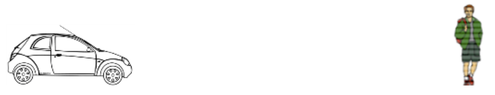
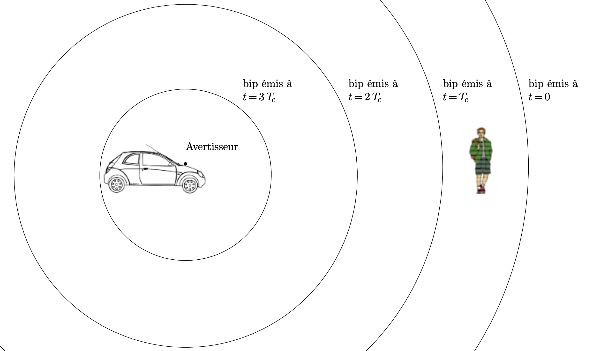
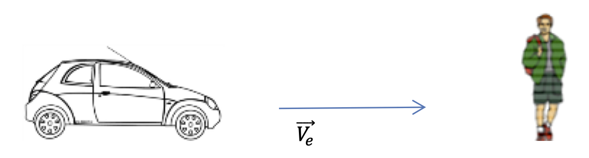
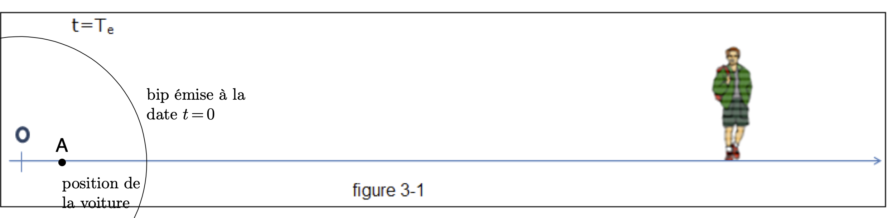
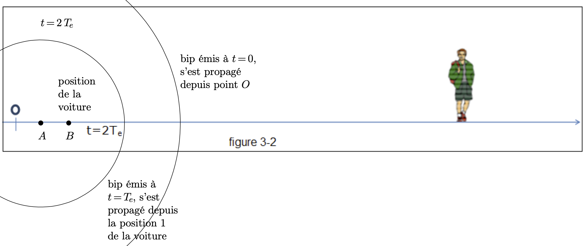
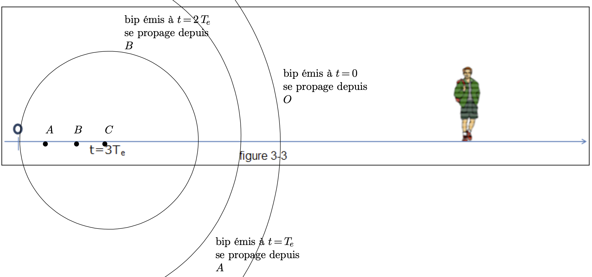
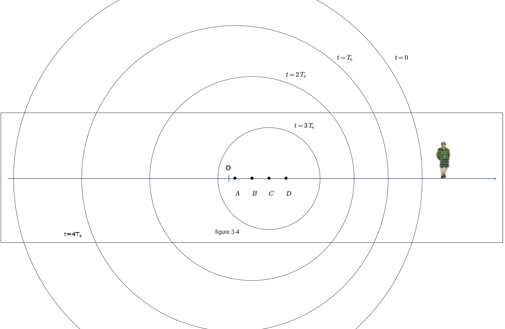

L’objectif de cette activité est la découverte de l’impact sur l’une des caractéristiques des ondes périodiques du mouvement relatif de l’émetteur et du récepteur.
Animation
Une animation liée à cette activité se trouve à cette adresse : https://ggbm.at/tbchtyzv. Elle est utilisable en ligne ou directement depuis l’application GeoGebra sur votre smartphone.
Émetteur et récepteur immobiles l’un par rapport à l’autre
L’avertisseur à l’avant d’une voiture à l’arrêt émet des « bips » sonores à intervalles de temps régulier $T_e= \pu{1 s}$. Une personne immobile sur la route perçoit les « bips ».

- Un bip est émis à l’instant $t=0$. Donner l’allure de la surface où se trouvent tous les points de l’espace percevant ce premier bip quelques instants plus tard.
- On fixe l’échelle de représentation suivante : chaque signal sonore correspondant à un bip se déplace d’une distance équivalente à $\pu{3 cm}$ sur le schéma pendant une période $T_e$. On considère que le premier bip est émis à l’instant $t=0$. On considère l’instant $t = 4\,T_e = \pu{4 s}$. Représenter, sur le schéma ci-dessus, en coupe verticale, les points de l’espace atteints par les différents bips émis.
- Comparer la fréquence de réception des bips par la personne à celle de la fréquence d’émission des bips par la voiture.
Réponses
- Les fronts d’onde sont des sphères centrées sur l’endroit où se trouve l’émetteur.
- 
- Sur le schéma, la distance entre deux fronts d’onde consécutifs est constante, depuis la voiture jusqu’à l’observateur. L’observateur reçoit donc le même nombre de bips par unité de temps qu’il y a eu de bips émis par unité de temps. Les fréquences $f_r$ de réception et d’émission $f_e$ des bips sont les mêmes.
L’émetteur se rapproche du récepteur à vitesse constante
La voiture émet toujours les mêmes « bips » à intervalle de temps régulier $T_e = \pu{1 s}$ et le véhicule se rapproche désormais de la personne à vitesse constante $\overrightarrow{V_e}$.

- À l’instant $t=0$, l’avant de la voiture émet un bip depuis le point $O$, origine de l’axe $(Ox)$. On suppose, là encore, que, sur le schéma, le front d’onde émis à l’instant $t=0$ s’est déplacé d’une distance de $\pu{3 cm}$ sur le papier pendant une période $T_e=\pu{1 s}$.
Document à télécharger
- Représenter sur la Figure 3-1, à $t=T_e$ ce premier front d’onde.
- En supposant que la vitesse de la voiture est 3 fois moins grande que celle de la propagation du son (une voiture ne peut pas aller aussi vite mais on fait cette supposition pour que l’effet Doppler soit bien « visible » sur le schéma), indiquer sur le schéma précédent la position de l’avant de la voiture à l’instant $t=T_e=\pu{1 s}$.
- Tracer sur les Figures 3-2, Figures 3-3, Figures 3-4, les différentes positions de la voiture aux dates $t=2,T_e=\pu{2 s}$ ; $t=3,T_e=\pu{3 s}$ ; $t=4,T_e=\pu{4 s}$ et les différents fronts d’onde.
- L’observateur reçoit-il le même nombre de bips par unité de temps que dans le cas où la voiture est immobile ?
- Comparer la fréquence de réception des bips perçue par l’observateur et celle des bips émis par la voiture.
- Comment évolueraient les cercles tracés si la voiture allait encore plus vite ? Quelle serait l’évolution de la perception ?
- La fréquence de perception des bips dépend-elle uniquement de la vitesse $\overrightarrow{V_e}$ ou varie-telle avec la distance qui sépare l’émetteur du récepteur ?
Réponses
-

-
  
-
La distance qui sépare deux fronts d’onde entre la voiture et la personne est plus petite que dans le cas où la voiture est immobile. La personne reçoit donc plus de bips par unités de temps que dans le cas où la voiture est immobile.
-
Le nombre de bips par unité de temps est la fréquence des bips donc la fréquence des bips reçus est plus grande que la fréquence des bips émis.
-
Les cercles tracés seraient encore plus proches les uns des autres, la fréquence des bips reçus serait alors encore plus grande.
-
Le nombre de bips reçus par unité de temps est le même que la voiture soit loin ou proche de l’observateur. La fréquence perçue ne dépend donc pas de la distance entre l’émetteur et l’observateur mais uniquement de la vitesse de l’émetteur par rapport à l’observateur.
L’émetteur s’éloigne du récepteur à vitesse constante
Sur le schéma de la situation à la date $t=4,Te=\pu{4 s}$, dessiner un observateur situé à gauche de $O$ le plus loin possible sur l’axe.
- Pour cet observateur, que fait la voiture ?
- L’observateur reçoit-il le même nombre de bips par unité de temps que dans la situation statique (section 1 de ce document) ? Comparer la fréquence de réception des bips perçue par l’observateur et celle des bips émis par la voiture.
Réponses
- Pour cet observateur, la voiture s’éloigne.
- Le nombre de bips reçus par unité de temps est cette fois-ci plus petit que dans le cas où la voiture est immobile : la fréquence de réception est plus petite que la fréquence d’émission.